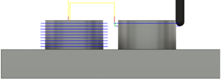

Brut restant maximum = 4 mm
Les parois raides sont usinées simultanément.
Valeur estimée visant à obtenir un ordre de passes d'usinage plus sécurisé entre deux parois pentues avoisinantes lorsque l'option '''Pentu d'abord est sélectionnée comme Priorité'''.
Lorsqu'une matière de brut irrégulière est conservée depuis une opération précédente entre deux parois pentues, le fait d'appliquer une découpe sur une large profondeur au niveau de l'une des parois pentues seulement entraîne une lourde charge sur l'outil lors de son interaction avec des matières restantes à proximité. Il est préférable d'appliquer alternativement une coupe entre les deux parois pentues pour éviter d'endommager l'outil.
L'option Brut restant maximum permet de réorganiser la trajectoire d'outil de sorte que les deux parois pentues situées l'une à côté de l'autre soient usinées au même niveau Z avant de passer au niveau Z suivant.
Estimez une valeur supérieure à la distance entre les segments de la trajectoire d'outil autour des deux parois. La géométrie de l'outil et du modèle a une incidence sur le moment et l'emplacement auxquels la réorganisation a lieu.
 |
Brut restant maximum = 2 mm |
|
Brut restant maximum = 4 mm |
Dans cet exemple, le fait de redéfinir la valeur de l'option Brut restant maximum de 2 mm sur 4 mm permet de réorganiser les passes d'usinage.
'''Remarque: si aucune valeur de brut restant maximum n'est indiquée, une valeur minimum par défaut de 10% du rayon de l'outil est utilisée.'''